Монтаж
и спор
о форме
Что общего у этих фильмов?
Дело не в том, что все они — советские и почти ровесники. Дело в том, что все они служат одной идеологии — и пытаются сделать революционной не только тему, но и саму форму фильма.
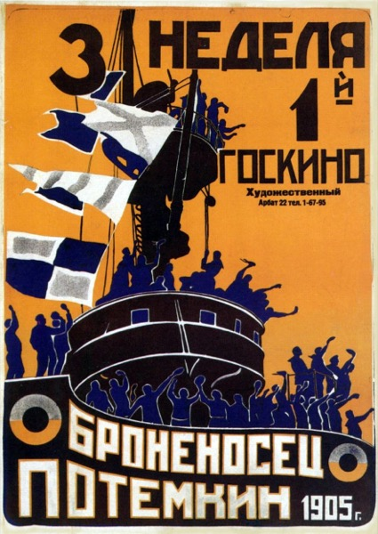
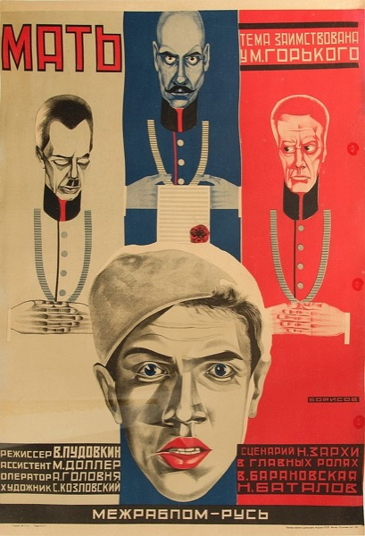
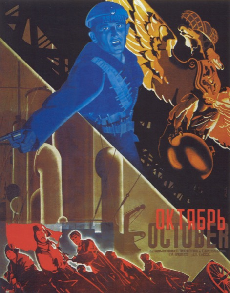
Где мы в курсе
В лекции 1 кино оказалось товаром, который производит идеологию. Теперь — поворот к форме: советский авангард утверждал, что революционным может быть само устройство фильма, а не только его сюжет. И сразу же — что с этим тезисом сделал ортодоксальный марксизм.
Можно ли смонтировать
революцию?
Советский тезис: содержание не делает искусство революционным — старые буржуазные формы переваривают любой сюжет. Менять нужно само устройство восприятия. Но согласны ли с этим другие марксисты?
Кино молодой
революции
После 1917 кинематограф для большевиков — главный инструмент агитации в неграмотной стране. Плёнки не хватает, поэтому в мастерской Кулешова учатся выжимать смысл не из съёмки, а из склейки. Дефицит сам толкает к теории монтажа.
Из всех искусств для нас важнейшим является кино.
Новое искусство
для нового общества
Революция, Гражданская война, разруха, страна почти сплошь неграмотна. Старые формы — буржуазный театр и салонный роман — не годятся: новому обществу нужен новый язык, понятный массам и говорящий о них.
Кино для большевиков — не развлечение, а инструмент строительства человека: агитпоезда везут плёнку в деревню, а молодые режиссёры буквально изобретают, как должно выглядеть искусство социализма.
ность
Образ доходит туда, куда не доходит текст.
Кино едет к зрителю — в окопы и деревни.
лист
Нет «как принято» — форму изобретают с нуля.
С чего начался
советский монтаж
У всех — Эйзенштейна, Пудовкина, Вертова — один учитель: Лев Кулешов. В разрушенной стране нет плёнки, и его мастерская монтирует обрывки чужих фильмов. Из нужды рождается гипотеза, перевернувшая кино.
Гипотеза дерзкая: специфический материал кино — не кадр, который снимают, а стык, в котором его соединяют.
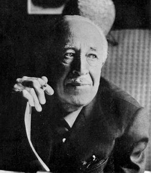
Эффект Кулешова — смысл собирает зритель.
Творимая география — пространство, которого нет.
Собранный человек — тело из чужих фрагментов.
Смысл рождается
между кадрами
Один и тот же кадр невозмутимого лица актёра Мозжухина Кулешов склеивал с тарелкой супа, гробом, играющим ребёнком. Зрители восхищались «тонкой игрой»: то голод, то скорбь, то нежность. А лицо было одно и то же.
Вывод: значение производит не кадр, а склейка. Эмоцию монтирует сам зритель — из соседства.
Монтаж создаёт пространство, которого нет
Кулешов снял актёров в разных концах Москвы, в разные дни — и склеил так, что они встречаются, идут вместе и поднимаются по ступеням здания, которого в кадре с ними не было вовсе.
Он
Снят у одного здания.
Она
Снята в другом районе, в другой день.
Лестница
Здание, к которому они «идут».
Единое место
Зритель видит цельную сцену в пространстве, которого не существует.
Монтаж создаёт
человека, которого нет
Третий опыт идёт ещё дальше. Из крупных планов разных женщин — глаза одной, спина другой, руки третьей, ноги четвёртой — монтаж собирает на экране одну цельную «идеальную женщину». Её не существует: она рождена только склейкой.
Кино не фиксирует тело — оно конструирует его из фрагментов.
Кино не снимает реальность — оно её собирает
Эмоция
Производится склейкой, а не игрой актёра.
География
Сцена существует только в монтаже.
Человек
Образ собран из фрагментов разных людей.
Если смысл, пространство и сам человек конструируются монтажом, то кино — не зеркало мира, а машина по его сборке. Отсюда вырастет всё: и «форма как оружие» Эйзенштейна, и весь спор о том, что эта машина производит — пробуждение или подчинение.
Монтаж
аттракционов
Эйзенштейн строит фильм из «аттракционов» — ударных эпизодов, рассчитанных на шок и эмоциональное потрясение зрителя. Цель не убаюкать иллюзией, а активно воздействовать, монтируя зрителя, как монтируют плёнку.
Единица сильного воздействия, выбранная по расчёту эффекта.
Не наблюдатель, а материал, который надо «обработать».
Не развлечь, а пробудить и направить классовое чувство.
Диалектика
в самой склейке
Для Эйзенштейна монтаж — это столкновение: кадр А и кадр Б конфликтуют, и из их удара рождается третье — понятие. Это прямая проекция диалектики на форму: тезис, антитезис, синтез прямо в склейке.
Вот почему авангард претендует на звание материалистической формы: не «история о революции», а революция в способе мышления зрителя.
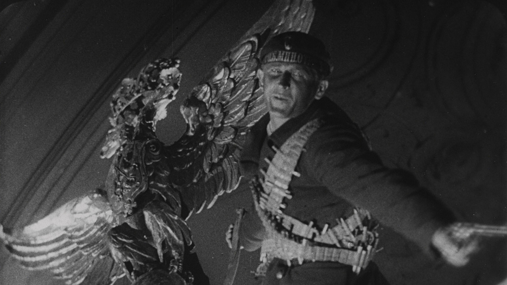
Октябрь
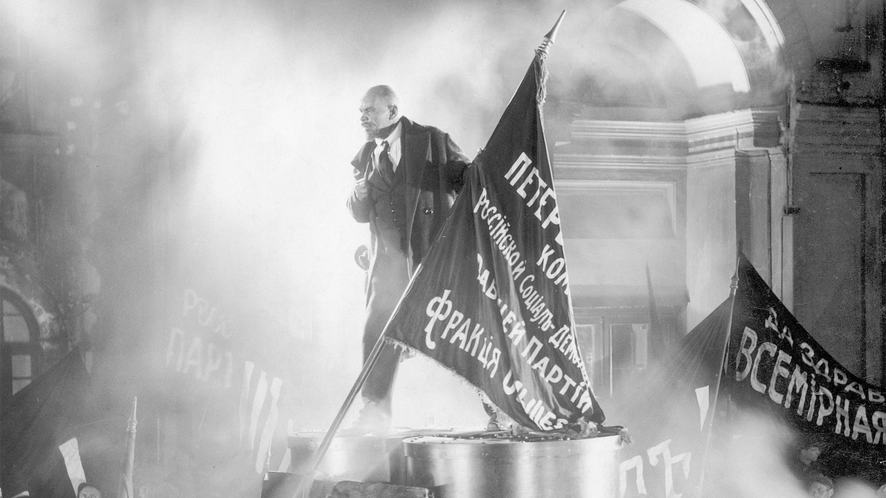
«Октябрь» (1928) — монтаж, который не рассказывает, а доказываетСамый смелый
эксперимент
В «Октябре» Эйзенштейн доводит идею до предела: интеллектуальный монтаж — это монтаж не действий, а понятий. Цепочка «За бога и отечество»: образ Христа сменяется чередой идолов — к деревянному языческому божку. Вывод рождается без слов: визуальный ряд сводит сакральное к примитивному, обслуживая задачи партийной идеологии.
Керенский на лестнице склеен с механическим павлином — тщеславие выведено монтажной рифмой, а не репликой.
Киноглаз
и киноправда
Вертов отвергает игровое кино как «опиум»: никаких актёров, декораций и сюжетов. Камера — совершенный глаз, который видит мир точнее человеческого, а монтаж даёт «коммунистическую расшифровку» действительности.
вымысла
Игровое кино обманывает; правда — в съёмке жизни врасплох.
Камера видит больше глаза: ускорение, замедление, ракурс.
фактов
Смысл собирается из реальных фрагментов труда и города.
Три школы, три монтажа
Столкновение
Кадры конфликтуют; смысл взрывается из противоречия. Зритель потрясён и пробуждён.
Сцепление
Кадры складываются, как кирпичи; эмоция нарастает плавно. Зритель ведётся и сопереживает.
Киноглаз
Монтаж не вымысла, а фактов: камера ловит жизнь, склейка расшифровывает её «коммунистически».
Уже внутри авангарда нет единой «революционной формы»: ломать зрителя (Эйзенштейн), вести его (Пудовкин) или обнажать саму технику (Вертов) — спор, предвосхищающий большой конфликт реализма и формализма.
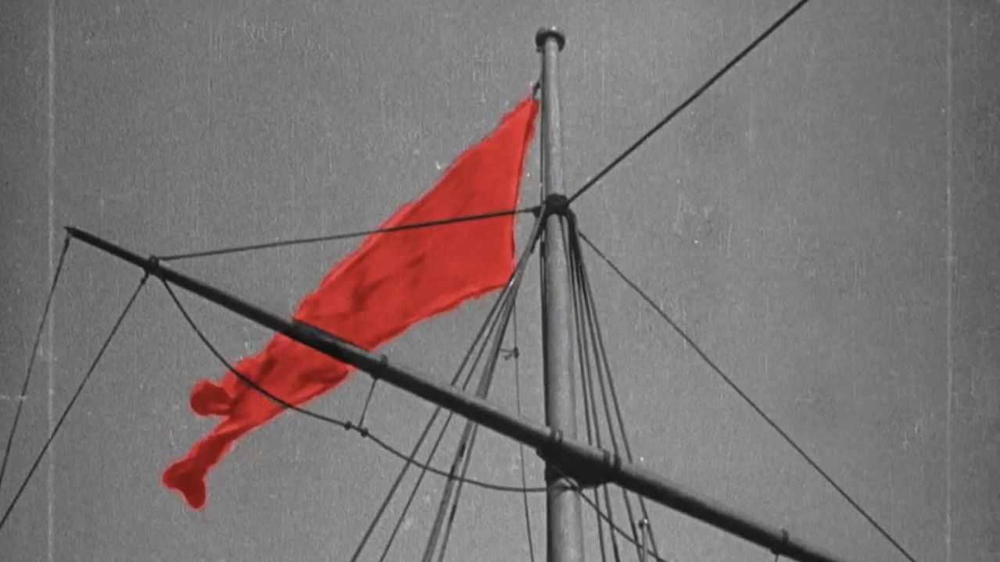
Броненосец «Потёмкин»
«Потёмкин»реж. Сергей Эйзенштейн
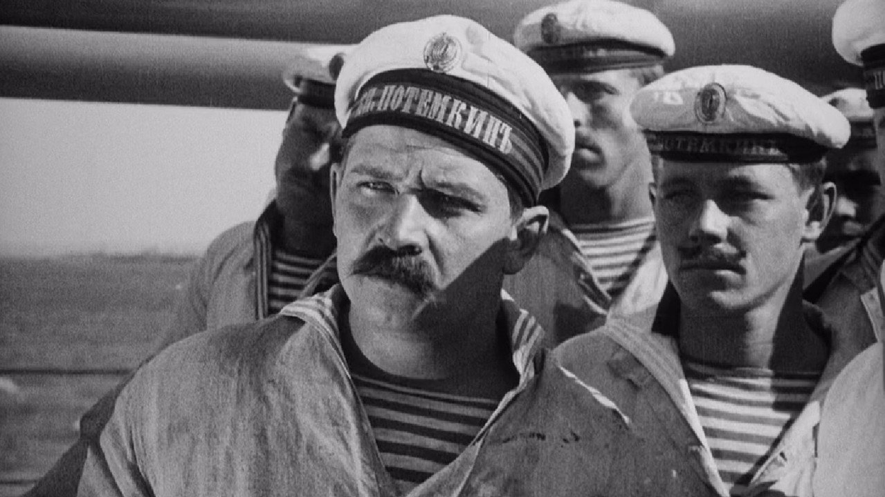
Броненосец «Потёмкин»
Восстание матросов 1905 года. Центрального героя нет — действующее лицо это масса. Кульминация — расстрел на Одесской лестнице, эталон ритмического монтажа.
Рядом — ранняя «Стачка» (1925), где Эйзенштейн впервые разворачивает монтаж аттракционов в полный рост.
Кино как
удар, а не рассказ
Эйзенштейн начинал в театре с идеи «монтажа аттракционов» (1923): спектакль (а затем фильм) — это серия рассчитанных потрясений, бьющих по зрителю. В «Стачке» и «Потёмкине» он переносит это в кино.
Фильм заказан к 20-летию революции 1905 года — и Эйзенштейн делает героем не личность, а восставший коллектив.
Кадр как рассчитанный удар по зрителю.
Заказ к юбилею революции.
Субъект истории — класс, а не герой.
лестница«Броненосец Потёмкин»
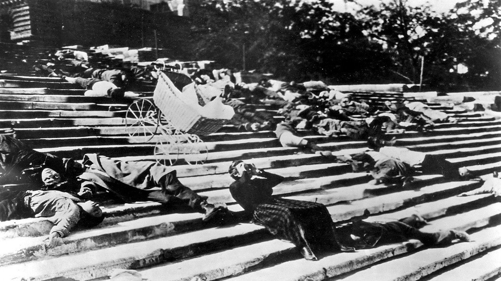
Ужас, собранный из склеек
Расстрел построен не на «реализме», а на монтажном ритме: сапоги солдат, катящаяся коляска, лица — короткие куски сталкиваются и нагнетают ужас. В финале три кадра каменных львов (лежит → поднимает голову → встаёт) монтируются в одну фигуру: «даже камни восстают».
Смысл рождается из склейки, а не из того, что в отдельном кадре.
Столкновение
как метод
У Эйзенштейна монтаж — это конфликт: два кадра сталкиваются (тезис + антитезис) и рождают третий смысл (синтез), которого нет ни в одном из них. Львы — чистый интеллектуальный монтаж: идея «восстания» возникает из склейки статичных скульптур.
Длина кусков задаёт пульс сцены сильнее, чем само действие, — это ритмический монтаж.
Длина кадров — пульс сцены.
Аттракцион-шок: беспомощность против машины насилия.
Метафора-синтез из трёх статичных кадров.
Сила фильма
Доказывает тезис на деле: эмоцию можно сконструировать монтажом, а героем сделать класс, а не личность. Форма работает политически.
Где предел
Расчётливое потрясение легко становится манипуляцией. Та же монтажная машина одинаково служит и революции, и любой пропаганде — вопрос, который встанет в лекции 4 (Беньямин и Рифеншталь).
Урок метода
«Потёмкин» — лучший аргумент за тезис «форма революционна». Но его же сила обнажает риск: техника воздействия нейтральна, заряд ей придаёт контекст, а не сам приём.
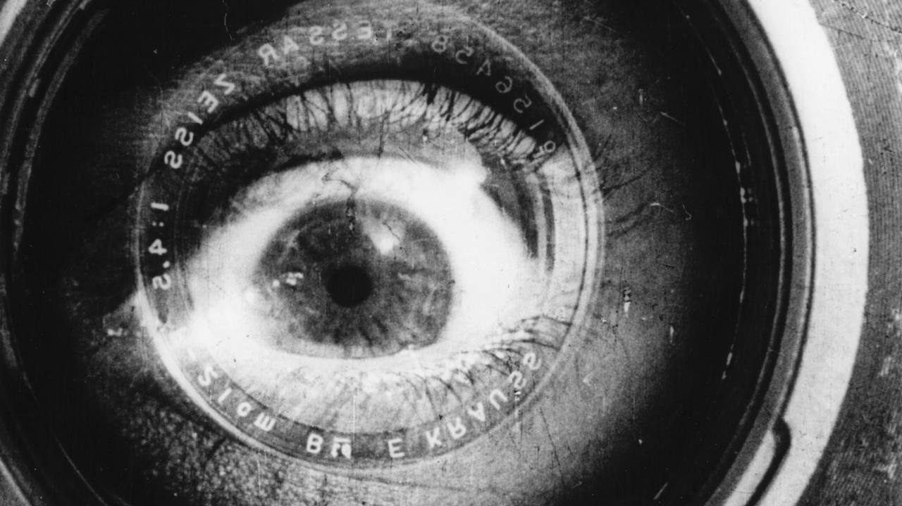
Человек с киноаппаратом
с киноаппаратомреж. Дзига Вертов
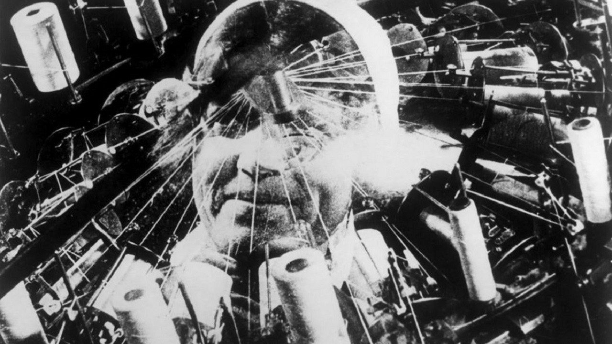
Человек с киноаппаратом
День большого города от рассвета до ночи: труд, машины, рождение, спорт. Без актёров, без титров, без сюжета — манифест киноглаза в действии.
Фильм постоянно показывает сам процесс: оператора, монтажницу за столом, плёнку.
«Кинодрама —
опиум народа»
Вертов и его «Совет троих» презирали игровое кино: выдуманные истории, по их мнению, усыпляют. Лозунг группы прямо переиначивал Маркса: художественная драма — опиум. Вместо неё — «киноправда» и «киноглаз»: камера как более совершенный глаз, ловящий жизнь врасплох.
Это конструктивизм в кино: фильм не «отражает», а строит новое зрение нового общества.
Камера видит точнее и иначе, чем человек.
Жизнь, пойманная врасплох, без актёров.
тивизм
Фильм строит зрение, а не отражает мир.
и склейка«Человек с киноаппаратом»
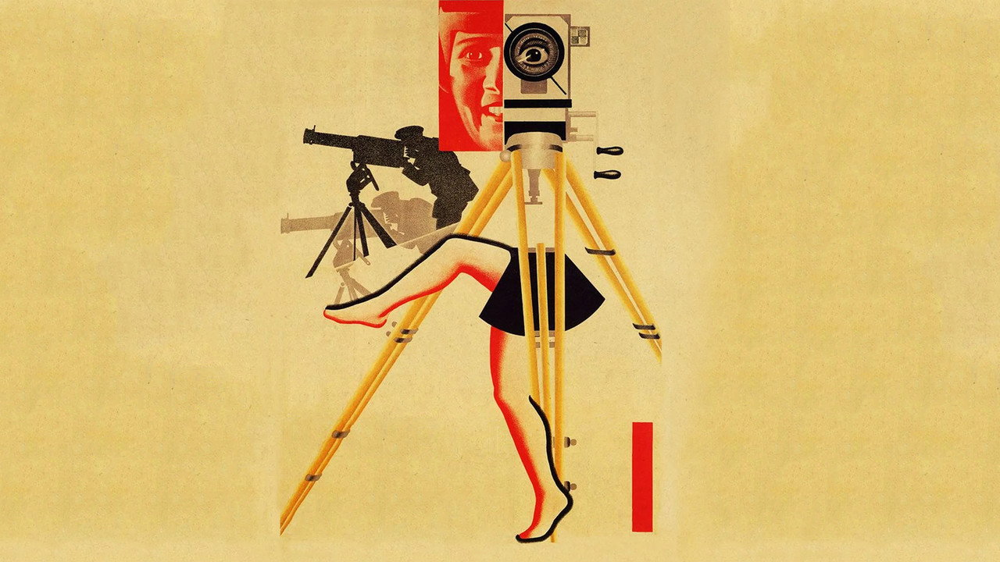
Кино, которое себя разбирает
Мы видим, как оператор снимает, как монтажница режет и склеивает плёнку, как кадр застывает на стоп-кадре. Кино перестаёт притворяться «окном в мир» и показывает себя как труд и конструкцию.
Перекличка с лекцией 1: если товарный фетишизм прячет труд, Вертов делает обратное — выставляет труд кино напоказ, разрушая фетиш готового фильма.
Симфония
города
Вертов монтирует не сюжет, а ассоциации и ритмы: двойная экспозиция, расщеплённый экран, ускорение и стоп-кадр, рифмы движений (станок ↔ швейная машина ↔ пишущая). Форма сама становится конструкцией, а не невидимой «прозрачностью».
Структура «один день города» связывает труд людей и труд киногруппы в единый ритм.
Двойная экспозиция, стоп-кадр, расщеплённый экран.
Монтаж по сходству движений и форм.
Параллель: работа города и работа кино.
Сила фильма
Самый «теоретический» из всех: форма прямо встроила в себя критику иллюзии. В 1970-е Вертов станет героем теоретиков аппарата (л. 7) и «группы Дзиги Вертова» Годара (л. 5).
Где предел
Радикальная форма рискует остаться элитарной: восторгает теоретика, но трудна для массового зрителя — ровно тот упрёк, который скоро бросит авангарду ортодоксия.
Урок метода
Вертов доводит тезис «форма революционна» до предела: фильм не о революции, а сам по себе — революция способа видеть. Здесь же его уязвимость: чем радикальнее форма, тем уже аудитория.
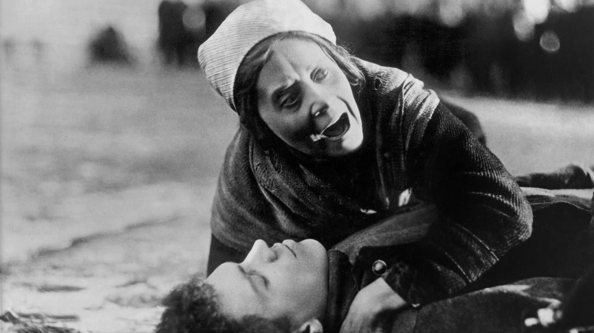
Мать
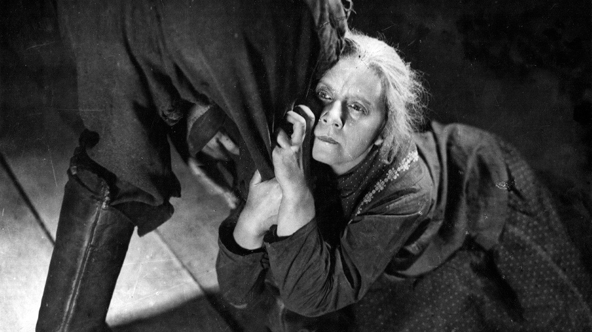
Мать
По роману Горького: мать постепенно переходит на сторону сына-революционера. Монтаж Пудовкина — не удар, а нарастание: кадры складываются в эмоциональную волну.
Знаменитая сцена — ледоход на реке, смонтированный с растущей демонстрацией рабочих.
Не удар,
а кирпичи
Пудовкин спорит с Эйзенштейном: для него монтаж — не столкновение, а сцепление, складывание кадров, как кирпичей в стену. Каждый кадр добавляет смысл и эмоцию к предыдущему, ведя зрителя плавно, а не толчками.
Поэтому у Пудовкина есть герой, с которым отождествляешься, — путь к эмоции идёт через характер.
Кадры складываются, а не сталкиваются.
Монтаж как кладка смысла слой за слоем.
Эмоция — через идентификацию с персонажем.
и демонстрация«Мать»
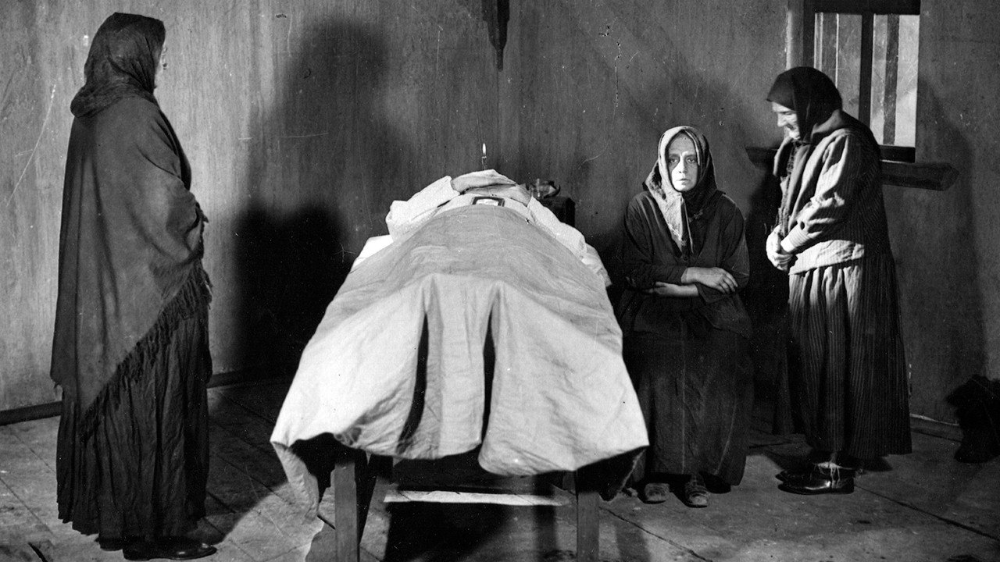
Ледоход и пробуждение
Весенний лёд трескается и идёт по реке — и в монтаже это становится образом просыпающихся масс. В отличие от эйзенштейновского столкновения, Пудовкин сцепляет кадры в плавную метафору, ведя зрителя к сопереживанию, а не к шоку.
Тот же материал — революция — но другая стратегия формы: эмоциональная идентификация вместо интеллектуального удара.
Волна вместо
толчка
Параллельный монтаж природы (ледоход) и истории (восстание) копит эмоцию постепенно, как прибывающая вода. Зритель не отстранён, а втянут — это ближе к «реализму», чем к авангардному шоку.
Пудовкин делает монтаж невидимым там, где Вертов его обнажает: две противоположные стратегии внутри одного авангарда.
Природа (ледоход) ↔ история (восстание).
Эмоция копится кирпич за кирпичом.
кация
Зритель сопереживает герою — ближе к реализму.
Сила фильма
Пудовкин доступнее Эйзенштейна и Вертова: эмоция и характер делают авангардный монтаж понятным широкому зрителю. Это «мост» к будущему реализму.
Где предел
Чем сильнее идентификация с героем, тем ближе фильм к той самой иллюзорной форме, которую авангард обещал сломать. Граница между «вести» и «убаюкивать» тонка.
Урок метода
Три фильма — три ответа на вопрос о форме: потрясти (Эйзенштейн), показать механику (Вертов), увлечь (Пудовкин). Единой «марксистской формы» нет даже у авангарда.
Форма или содержание?
Под спором о монтаже лежит вопрос постарше: что в искусстве первично — что сказано или как сказано? И какой ответ «по-марксистски» правильный. Подвох в том, что обе стороны считают марксистами именно себя.
Авангард
Старые формы тайно протаскивают старую идеологию. Менять надо само устройство восприятия — иначе любой революционный сюжет будет «съеден».
Реализм
Революционно верное отражение реальности и её классовой тотальности. Игра с формой — буржуазный формализм, бегство от действительности.
Реализм
против формализма
Главный конфликт марксистской эстетики XX века: что делает искусство революционным — верное отражение целого или взлом привычного восприятия? Авангард ответил «форма». Многие марксисты ответили «нет».
Лукач:
искусство целого
Дьёрдь Лукач — крупнейший марксистский теоретик — защищает реализм: задача искусства показать тотальность общественных отношений через типические характеры. Модернизм и формализм он считает буржуазным распадом, бегством от целого к осколкам и приёму.
Показать общество как целое, а не набор фрагментов.
Герой как тип, в котором сходятся силы эпохи.
Формализм = декаданс, оторванный от масс.
Брехт:
взломать иллюзию
Бертольт Брехт возражает Лукачу: «гладкий» реализм, который просто отражает поверхность, усыпляет и выдаёт исторические отношения за вечные. Нужна форма, которая очуждает привычное и заставляет зрителя думать, а не сопереживать.
Сделать знакомое странным, чтобы оно стало видимым.
иллюзии
Разрыв вживания — зритель остаётся критиком.
Брехт и кино — отдельная лекция 5.
Как ортодоксия
осудила авангард
В 1934-м социалистический реализм провозглашён единственным официальным методом. С середины 1930-х разворачивается кампания против «формализма»: авангард клеймят как буржуазный, элитарный, непонятный массам.
Именно марксисты — государственные — раздавили марксистский авангард.
Соцреализм — обязательная доктрина для всех искусств.
Газетная травля «формализма» в музыке и кино.
луг»
Фильм Эйзенштейна остановлен и фактически уничтожен (1937), обвинён в формализме.
А что, если монтаж
и есть манипуляция?
Главный противник пришёл не слева, а из реализма. Андре Базен (1950-е) перевернёт оценку: монтаж навязывает зрителю готовый вывод, монтируя его мысль за него. Свобода — в длинном плане и глубинной мизансцене, где реальность дышит, а зритель сам решает, куда смотреть.
Для Базена «За бога и отечество» — не доказательство, а фокус: режиссёр подменил реальность собственной риторикой.
план
Длительность вместо склейки — время реально течёт.
кадра
Несколько планов в фокусе: выбор за зрителем, а не за монтажёром.
Монтаж = свобода мысли (Эйзенштейн) или её подмена (Базен)?
Так «рифмуется» ли авангард с марксизмом?
«Раз ортодоксы его осудили — значит, авангард вне марксистской теории кино».
Наоборот: авангард — не периферия, а сторона в центральном споре марксистской эстетики. «Марксисты критиковали» означает лишь, что марксизм внутренне расколот, а не что предмет лежит вне его.
К тому же побеждённая ветвь не исчезла: в 1970-е теоретики Screen и Годар вернут Эйзенштейна и Вертова как образец материалистической, анти-иллюзорной формы (лекция 7). Поражение в СССР обернулось каноном на Западе.
Три формы — один вопрос
Столкновение
Диалектика в склейке; коллектив как герой. Мощно — и манипулятивно.
Обнажение
Показать труд кино, сломать иллюзию. Радикально — и элитарно.
Сцепление
Эмоция и характер. Доступно — и близко к «иллюзии».
Авангард доказал, что форма политически нагружена. Но он же показал: единого рецепта «революционной формы» нет — и сам марксизм об этом спорит до сих пор.
Эффект Кулешова работает прямо сейчас
Открытие 1920-х никуда не делось — оно стало воздухом массовой культуры. Везде, где смысл и эмоция собираются из соседства кадров, работает та же логика, что у Эйзенштейна.
Монтаж продаёт
Тридцать секунд склейки создают желание, которого до ролика не было.
Монтаж убеждает
Тот же кадр между двумя разными — и «факт» меняет смысл на противоположный.
Монтаж формирует
Бесконечная нарезка приучает к связкам, которые мы принимаем за «реальность».
Сто лет спустя —
под фМРТ и ЭЭГ
Догадку Кулешова — что соседний кадр меняет восприятие лица — сегодня эмпирически тестирует нейронаука. И в целом подтверждает: контекст-кадр действительно сдвигает и оценку эмоции, и активность мозга.
Спор советского киноавангарда стал предметом когнитивной науки — редкий случай, когда художественная интуиция опередила лабораторию на десятилетия.
Нити вперёд и назад
Вертов как анти-фетишизм: фильм показывает свой труд.
Беньямин: техническая воспроизводимость и политизация искусства.
Брехт и очуждение в кино — продолжение спора с реализмом.
Screen и Годар возвращают авангард как образец формы.
В лекции 3 Адорно увидит в Голливуде ровно обратное монтажу: стандартизацию.
Чья форма победила в массовом кино — авангарда или индустрии?
Вопросы к дискуссии
Если монтажная техника одинаково служит «Потёмкину» и пропаганде, можно ли вообще говорить о «революционной форме» — или политику задаёт только контекст?
Кто прав в споре Лукача и Брехта применительно к кино: нужен ли массам понятный реализм или взламывающая форма? Приведите современный пример.
Был ли разгром формализма «предательством» марксизма — или закономерным выбором массовой доступности против элитарности?
Какой современный фильм ближе к Вертову (обнажает свою сделанность), а какой — к Пудовкину (ведёт за героем)?
Ключевые понятия
Соединение кадров как главный смыслопорождающий приём кино.
Кулешова
Смысл рождается из соседства кадров, а не из их содержания.
аттракционов
Построение фильма из ударных эпизодов воздействия.
монтаж
Столкновение кадров рождает новое понятие (синтез).
Камера как совершенный глаз; монтаж фактов вместо вымысла.
Приём, делающий привычное странным и видимым (Брехт).
(Лукач)
Отражение тотальности через типические характеры.
Официальный метод советского искусства с 1934 года.
К просмотру
Три фильма-кейса плюс ранняя «Стачка» как дополнительный пример монтажа аттракционов.
«Потёмкин»С. Эйзенштейн · СССР · 75 минСцена: Одесская лестница · три каменных льва. Приём — диалектический монтаж.
киноаппаратомДзига Вертов · СССР · 68 минСцены: оператор и монтажница за работой. Приём — киноглаз, обнажение метода.
К чтению
Итог лекции 2
Форма политически нагружена — но что происходит, когда мощная киноформа попадает в руки индустрии, а не революции? Советы видели в кино орудие пробуждения. Франкфуртская школа увидит в Голливуде машину усыпления.
Поворот от формы как освобождения — к форме как стандартизации.
Культуриндустрия
Адорно и Хоркхаймер: развлечение как продолжение труда, стандартизация и псевдоиндивидуализация. Голливуд как фабрика — и кино как товар (возврат к лекции 1 на новом витке).